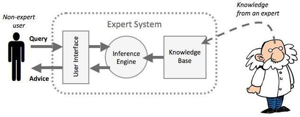
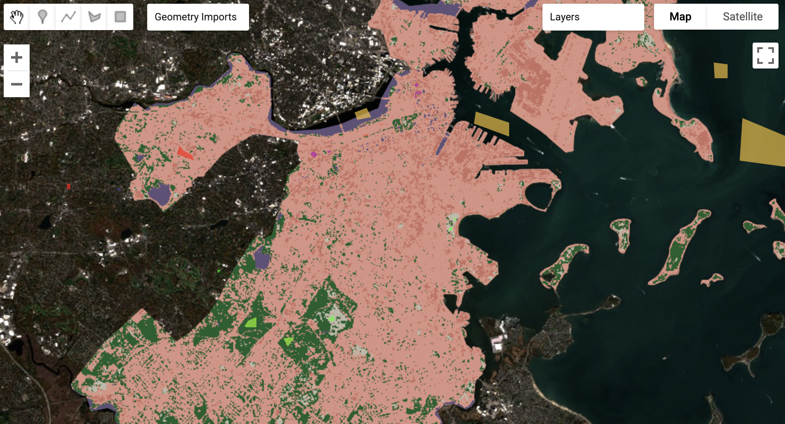

6 Classification I
6.1 Summary
After going through Google Earth Engine basics last week, we were ready to delve deeper into classification methods using GEE. The lecture provided an overview of methodologies and applications. We started by looking at how classification builds on expert systems (Figure 1), which we learned are systems that use human knowledge to solve problems.

Machine learning (ML), as a computational modeling of the learning process, mimics inductive learning, whereby humans generalize from examples to reach logical conclusions. For computers to achieve this, ML searches through data to explain patterns and make predictions. I was surprised to learn I’d already worked with ML before with regression analysis. We then spent time focusing on a few specific supervised classification methods, including classification and regression trees (CART), random forests, and support vector machines.
Classification trees categorize data into discrete classes using classic “yes/no” decision tree models. In contrast, regression trees predict continuous values, making them useful when linear regression is insufficient. These models divide data into segments, placing breaks where the sum of squared residuals (SSR) is minimized. The root variable is chosen to reduce Gini impurity, and methods like setting a minimum observation threshold (e.g., 20 pixels in Earth observation) or weakest-link pruning help prevent overfitting.
Random forests extend CART by combining multiple decision trees, where the most common outcome (“votes”) across trees determines the final classification. I applied this method in the practical exercise, using it to classify land cover in Boston (Figure 2)

Lastly, we covered SVMs, which function similarly to logistic regression but incorporate additional parameters for flexibility. Adjusting factors like the kernel type, C (which influences decision boundary maximization), and gamma (which controls the influence of training examples) alters the classification. While these methods provide high accuracy, they also present challenges. SVMs and random forests essentially function as “black box” models, making their decision processes less interpretable than some other classification methods, like decision trees. This issue resonated with me. While decision trees provide step-by-step walkthroughs, the logic behind an SVM or random forest is less clear. This can cause issues with transparency, making it difficult explain to why classifications are presented as such. That said, through the practical I was impressed by how such complex methods can be executed in relatively little code.
6.2 Application
Following this week’s lecture, I was curious to explore previous work using these classification methods. I decided to focus particularly on random forests and support vector machines.
In a study by Svoboda et al. (2022), the authors utilize random forests in Google Earth Engine to classify land in Czechia for the LULUCF (Land Use, Land-Use Change, and Forestry) greenhouse gas inventory. While Czechia traditionally uses cadastral data for this task in the past, the study highlighted the potential for Earth observation data to be applied in this context. I noticed the authors use the median method for mosaicking, aligning with good practices we discussed in class. Overall, the model achieved the highest accuracy for cropland and woodland but was slightly less effective for settlements. The authors highlight the potential of cloud-based classification with EO data to enhance LULUCF applications globally and emphasize the need for stronger collaboration between end-users and EO experts to maximize its impact.
Support vector machines have also been adopted for remote sensing tasks. Yan and Huang (2019), for example, apply SVMs to detect sea ice, arguing that they provide better accuracy than maximum likelihood classification. A key advantage highlighted was the model’s robustness with limited training data. The study was particularly interesting because it addressed a gap in the application of SVMs to sea ice detection. Furthermore, the authors utilize Delay Doppler Mapping data from satellite TDS-1, a form of remote sensing data I hadn’t encountered before. They concluded that SVMs outperformed neural network (NN) and convolutional neural network (CNN) algorithms. While their analysis was not conducted in GEE, it still provided valuable insights into applying classification methods and working with new datasets.
These readings increased my appreciation for striking a balance between model complexity and interpretability. The more I explore EO applications, the more critically I can assess them. I found Svoboda et al. (2022) particularly effective in clearly outlining their policy objectives, tools, and methods, making the study easy to follow. In contrast, the second paper was less straightforward in connecting its findings to broader applications. I believe the most valuable research not only presents methodological advancements but also links them to actionable outcomes, ensuring their relevance beyond academic contexts.
6.3 Reflection
During the lecture this week, we skipped over the maximum likelihood portion of the presentation. It was mentioned that, these days, machine learning is more relevant. This made me wonder, are there still contexts where maximum likelihood remains useful? While ML approaches dominate, it’s important to remember that no model is universally superior.
While I read the papers above, I was reminded that even sophisticated ML models are not infallible. For instance, the Czechia study showed lower accuracy for urban areas, demonstrating that advanced methods still struggle with certain classifications. As ML continues to shape classification tasks, researchers and practitioners must remain aware of its limitations, ensuring results are taken with caution rather than assumed to be inherently superior. This also links back to interpretability. While methods like random forests and SVMs may offer higher accuracy, their complexity can make them difficult to interpret. This trade-off between performance and transparency is crucial, particularly in contexts where decisions in analysis must be explainable to stakeholders.
With artificial intelligence now a major topic of discussion across many fields, this week’s content also led me to wonder how advanced AI and remote sensing might evolve together, and how the classification methods we are learning today will adapt. In a similar way that machine learning methods pose interpretability issues, AI-based approaches often function “black boxes” with decision-making processes that are difficult to trace. As AI inevitably weaves its way the way researchers conduct geospatial analysis, it will be critical to carry forward the lessons learned from ML challenges, particularly regarding model transparency and bias in training data.
One of the key takeaways for me from this week’s content is that high accuracy alone is not enough. Methods should be interpretable, reproducible, and applicable to real-world scenarios.